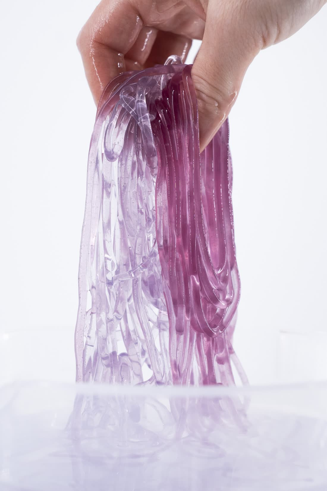
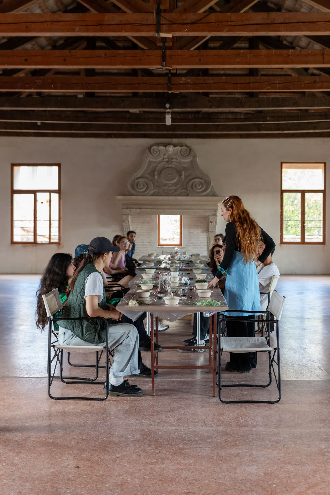

Education
Learn to reada material.
Not a recipe to follow, but a way to understand matter and build your own experimental practice.
Scroll
Educational approach
How Emi BioLab teaches
- Observation
Look closely at how the material moves, sets and dries.
- Understanding
Learn why it behaves that way, in plain words.
- Experimentation
Change one thing at a time and read the result.
- Autonomy
Leave with a method you can use on your own.
For designers, artists, students and curious makers. No lab needed: most of the work starts in a kitchen.
Learning formats
Two ways to learn


Next live session
Algi Yarn, live with Emi
From seaweed to thread · 6.30 pm CET, online
- 01Alginate FoundationsBeginner · self-paced
Understand the material before the recipe.
→ - 02From Thread to TextileIntermediate · self-paced
From a single yarn to textile structures.
→
Example courses, to write with Emi.

Opening 2027
Emi BioLab School
A school for material experimentation and biodesign, with biomaterials as the first learning path.
Join the waitlist →